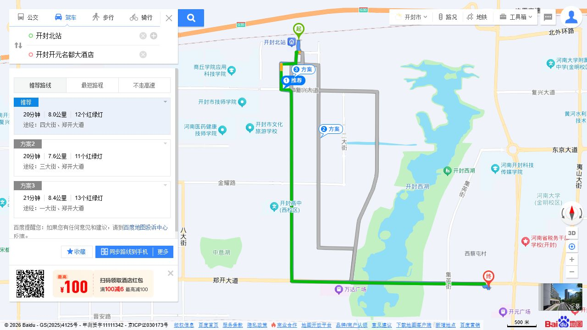
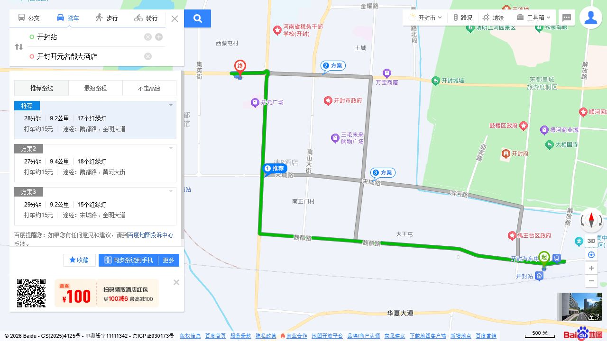
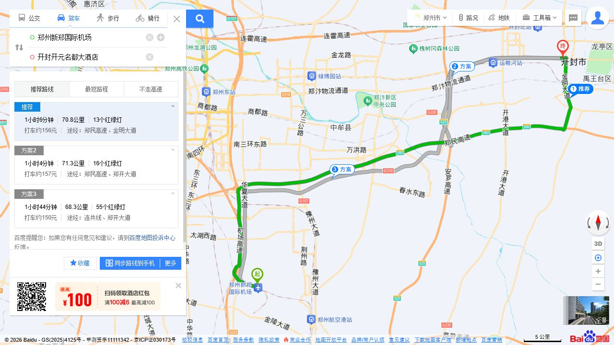

交通情况
导航时请搜索“开封开元名都大酒店”，并核对地址为“郑开大道东1号”。乘坐高铁可选择开封北站；乘飞机可抵达郑州新郑国际机场，再前往开封。
- 开封北站：开封北站 → 开封开元名都大酒店，路程约 8 公里
- 打车：约 18 分钟，费用约 20 元
- 公交：
【53 路】
起：开封北站
终：市人大市检察院站
步行：约 160 米到酒店
耗时：约 35 分钟
【出租车 / 网约车】
起：开封北站
终：开封开元名都大酒店
耗时：约 18 分钟
费用：约 20 元

- 宋城路站：宋城路站 → 开封开元名都大酒店，路程约 3 公里
- 打车：约 10 分钟，费用约 10 元
- 公交：
【31 路】
起：宋城路集英街站
终：市人大市检察院站
步行：约 160 米到酒店
耗时：约 30 分钟
【出租车 / 网约车】
起：宋城路站
终：开封开元名都大酒店
耗时：约 10 分钟
费用：约 10 元
查看实时路线地图
- 郑州东站：郑州东站 → 开封开元名都大酒店，路程约 50 公里
- 打车：约 60 分钟，费用约 100 元
- 铁路换乘：
【城际铁路 → 宋城路站】
起：郑州东站
终：宋城路站
到站后：转乘 31 路公交车或出租车前往酒店
【高铁 → 开封北站】
起：郑州东站
终：开封北站
到站后：转乘 53 路公交车或出租车前往酒店
查看实时路线地图
- 开封站：开封站 → 开封开元名都大酒店，路程约 9.2 公里
- 打车：约 20 分钟，费用约 20 元
- 公交：
【31 路】
起：二十七中站
终：市人大市检察院站
步行：约 220 米到酒店
耗时：约 50 分钟
【出租车 / 网约车】
起：开封站
终：开封开元名都大酒店
耗时：约 20 分钟
费用：约 20 元

- 郑州新郑国际机场：郑州新郑国际机场 → 开封开元名都大酒店，路程约 70.8 公里
- 打车：约 65 分钟，费用约 150 元
- 铁路换乘：
【城际铁路 → 宋城路站】
起：新郑机场站
终：宋城路站
到站后：转乘 31 路公交车或出租车前往酒店
【郑州东站中转】
起：新郑机场站
换乘：郑州东站
终：宋城路站或开封北站
到站后：乘公交车或出租车前往酒店
【出租车 / 网约车】
起：郑州新郑国际机场
终：开封开元名都大酒店
耗时：约 65 分钟
费用：约 150 元

以上时间和费用仅供参考，列车班次、公交线路及实际费用请以出行当日查询结果为准。